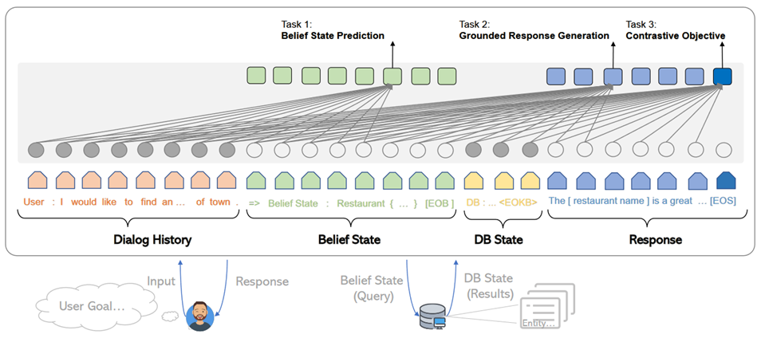

任务型对话系统中Neural Pipeline系列源码剖析
本文于进行了修改.
本文主要是基于github上的SOLOIST和AuGPT两份源码(here)进行的阅读. 这两份源码都是Neural Pipeline相关的, 因此笔者就基于该源码统一的进行分析了.
在阅读源码之前, 可能还是需要首先了解一下什么是任务型对话系统(TOD, task-oriented dialogue system)以及什么是neural pipeline的方法,如果我忘记了这两个概念,我会去阅读 这篇 笔记.
然后,这篇文章就着重于描述上述模型的代码实现了!
1. 总体结构
总体上而言, 任何一个深度学习的代码无外乎以下几个主要部分:
- 数据预处理: 解析和读取实验数据, 对实验数据进行一系列变换, 并最终整理为格式化的输入. 对于pytorch而言, 所谓的格式化输入相当于整理得到可供dataloader加载的数据,在具体传入模型的形式上, 除去一部分控制参数可以拥有 bool或scale的数值类型之外,绝大多数数据类型都应是一个张量,也就是tensor. 将不同维度的向量通过padding形成一个batch层面的张量是NLP中必须考虑的一环.
- 深度学习模型代码. 当下绝大多数深度学习模型都不是model free的,所以模型的设计几乎不可避免. 当然,由于预训练模型的兴起,深度学习模型部分的代码已经没有多少代码量了. 本文主要还是基于GPT-2这样一些transformer家族的模型进行处理,因此在模型结构设计上没有创新,可以直接复用hugging face, 如果我对设计transformer模型感兴趣,
这篇笔记记录了如何阅读并修改transformers源码, 我可以去看一下. - 训练部分的代码. 按照传统有监督学习的框架, 一个有监督学习主要包括data, model, loss function, optimization等四个基本组件, 由于data和model的出奇的重要性, 所以这两块被拿出来单独陈述了,而剩下的loss和optimization, 其实都可以放入训练部分的代码中. 一般而言,训练部分的代码便是这样的"胶水":用以记录如何进行这样的forward和backward的传播, 存储实验结果和模型参数, 进行可视化,等等等等.
- 模型测试环节的代码实现. 模型测试环节的代码实现和训练时大同小异,但对于NLG任务而言, 二者还是有较多的区别, 因此此处单独拿出来作为新的一部分.笔者在对已有的代码进行魔改时,曾经就是忘记了修改模型测试部分的代码而浪费了一周的宝贵时间. 在模型测试部分, 主要是设计prefix进行自回归的生成, 以及如何对生成的语句进行基于规则的后处理,最终将后处理的文本与ground truth 进行评估,以产生最终的结果.
2. Data部分
对于深度学习,尤其是transformer时代的深度学习而言, 当下的创新多从训练任务和整理数据入手,而非模型的结构. 笔者的同学甚至因为在面向某个NLP任务时自己设计了特殊的结构而被审稿人质疑. neural pipeline的方法, 其核心思路是将TOD中的各个基本组件都统一地放在单一的一个NLG模型中,所以, 对数据的编排就不得不算是重中之重了.
下文将先介绍GPT-2的输入输出具体是什么风格, 之后介绍TOD的各基本模块的输入输出为什么, 最后在上述二者的基础上, 探究怎么用GPT-2做基本模块的输入. 当然,这里的问题是:为什么一定要用GPT-2 ? 其实不用GPT-2也是完全可以的, T5, BART等模型一样可以解决该问题, 此处单以GPT-2为示例,其他情况灵活变通.
2.1. GPT-2的输入形态
GPT-2的输入严格而言主要包括三部分:
- token encoding. 可以理解为是输入语句的语义信息输入. 实际上传入模型中的每一条数据都是index的列表. 相当于对于输入的一句话,可以通过tokenizer将其切分为若干个token(根据不同的tokenize方法而产生word 或 subword),而该token都可以唯一的与vocablist中的某一行对应,该行的行号便可以看作是这里的index. 而对于GPT-2这样的深度学习模型而言, 这里的index并不是一个数字, 而是可以理解为1个one-hot向量, 该向量仅仅在index处为1,其他地方为0. GPT-2会基于这样的one-hot向量, 使用一个早就学习好的embedding layer(其实就是1个全连接)将这个稀疏的向量映射为一个稠密的真值向量(比如从5w个词汇到768维), 后者便是真正的token embedding. 当然, transformer库也可以允许你直接传入embedding的列表来表示1句话,这样这个embedding层就不会生效.
- position encoding. 由于self-attention天生的无位置性,所以需要加入位置编码信息来确定顺序. GPT-2采用的是绝对位置编码,一般而言相当于从0到max_seq_len-1内的任何一个数字作为输入,之后会使用三角函数将这个数转化为1个embedding.
- type encoding. 用于区分每个token的类型. 比如A和B聊天, 那么就可以对这二者设置两种不同的类型.
不妨通过 GPT2LMHeadModel 中的 forward 函数进行简单的理解:
def forward( self, input_ids=None, # token encoding past=None, attention_mask=None, token_type_ids=None, # type encoding position_ids=None, # position encoding head_mask=None, inputs_embeds=None, labels=None, use_cache=None, output_attentions=None, output_hidden_states=None, ):
注意到此处还有一些别的函数, 这些函数在 这篇 笔记中会有详细介绍.
我们可以观察一下token encoding的映射embedding在GPT-2中的实现:
class GPT2Model(GPT2PreTrainedModel): def __init__(self, config): super().__init__(config) self.wte = nn.Embedding(config.vocab_size, config.n_embd) # token encoding-->token embedding layer self.wpe = nn.Embedding(config.n_positions, config.n_embd)# position encoding-->position embedding layer self.drop = nn.Dropout(config.embd_pdrop) self.h = nn.ModuleList([Block(config.n_ctx, config, scale=True) for _ in range(config.n_layer)]) self.ln_f = nn.LayerNorm(config.n_embd, eps=config.layer_norm_epsilon) self.init_weights() def get_input_embeddings(self): return self.wte def set_input_embeddings(self, new_embeddings): self.wte = new_embeddings
可以发现3.0.2版本的GPT-2, 在实现position embedding时并没有使用三角函数, 也是使用的pytorch中的embedding层.
关于GPT-2的文本输出,则更为简单. GPT-2在经过最末层的transformer模块之后,会进入一个线性分类器层W, 从而从embedding维度被映射到vocab length. 如果上述公式被表达为Y=W*d, 那么W的每一行都可以看作是vocab的表示, 即token embedding, 而映射后的Y则是vocab的分布. 最后生成的token将基于这个分布进行采样. 比如greedy就会是argmax,即直接取最大值对应的index,去查表找到这个vocab. 对上述过程的直观理解就是: Y可以看作是d与各token表示的相似度构成的向量,选取相似度最大的那个token. 这也是CV中比较传统的pattern matching的思想.
2.2. Neural Pipeline中的文本输入与输出
下面来看任务型对话系统Neural Pipeline的输入与输出形态.
| 模块 | 输入 | 输出 |
|---|---|---|
| NLU+DST | history | belief state |
| database retrievaling | belief state | database matching result |
| decision (i.e. dialogue policy) | belief state and database matching result | dialogue action |
| NLG case1 | dialogue action | delexicalized response |
| NLG case2 | belief state and database matching result | delexicalized response |
| lexicalizing | delexicalized response belief state datbase | response |
上表简单展示了大体上的各模块的输入输出,其中NLU+DST, decision, NLG三个主要部分是Neural Pipeline在进行, 而数据库的的检索和slot填值都可以简单地基于规则进行解决. 此处不会再去介绍每个输入和输出的数据都是什么意思, 但是可以简单写一下上述各个数据的数据结构:
| data structure | type |
|---|---|
| history | Vec<String> |
| belief state | HashMap<Domain, HashMap<Slot, Value>> |
| database matching result | HashMap<Domain, Int32> |
| dialogue action | Vec<(Intent, Domain, Slot, Value)> |
| delexicalized response | String |
| response | String |
类型中的domain, slot, value都是什么类型呢? 其实和任务型对话系统的设计有关, multiwoz比较玩具,就都是字符串了.
所可以看到, 把上述的结构全部转化为连续的字符串序列是利用预训练模型的第一步, 这个过程在前后端交互中似乎叫serial和deserial. 下面介绍之.
2.3. neural pipline与GPT-2的结合
我们最终的目标是用GPT-2来完成一个pipeline, 所以相当于用history做输出输出belief state, 之后检索数据库得到datbase matching result, 用三者做输入去产生actions, 最终产生delexicalized response.
整体架构可用下图表达:

serial的过程, 依照不同的代码实现有所不同, 主要而言其实包括两个大的部分:
- 如何将结构化信息表述成一个序列;
- 如何对各个子模块进行分隔.
我们可以看一下源码中的实现:
关于如何serial belief state:
def format_belief(belief: OrderedDict) -> str: assert isinstance(belief, OrderedDict) str_bs = [] for domain, domain_bs in belief.items(): domain_bs = ', '.join([f'{slot} = {val}' for slot, val in sorted(domain_bs.items(), key=lambda x: x[0])]) str_bs.extend([domain, '{' + domain_bs + '}']) return ' '.join(str_bs)
关于如何serial dialogue acts(这个是我自己写的):
def format_dialogue_act(acts) -> str: # assert isinstance(acts, List[List[str]]) str_da = [] # intent-domain-slot-value str_acts="" for act in acts: intent,domain,slot,value=act # str_acts+=f"{intent}, {domain}, {slot}, {value}; " str_acts+=f"{intent}, {domain}, {slot}; " return str_acts[:-2]
关于如何serial dialogue acts:
def default_translate_match(n): if n == 0: return 'no match' if n == 1: return '1 match' return f'{n} matches'
以及如何拼接history!
class InsertLabelsTransformation: user_label: str = 'User :' sys_label: str = 'System :' database_label: str = 'DB :' belief_label: str = 'Belief state :' dialogue_act_label: str = 'Action :' # template_label: str = "Template :" def __call__(self, sample: DialogDatasetItem) -> DialogDatasetItem: if isinstance(sample, tuple): sample = DialogDatasetItem(*sample) # Transform context ####################################################################### context = sample.context context = list(context) labels = self.user_label, self.sys_label for i in range(len(context) - 1, -1, -1): label, other = labels context[i] = label + ' ' + context[i] labels = other, label context = ' '.join(context) ####################################################################### # Database database = sample.database if database is not None: database_str = [] for database_domain, database_count in database.items(): database_str.append(database_domain + ' ' + default_translate_match(database_count)) database = self.database_label + ' ' + ' , '.join(database_str) # Belief state belief = sample.belief if belief is not None: belief = self.belief_label + ' ' + belief # dialogue act if sample.dialogue_act is not None: dialogue_act=sample.dialogue_act dialogue_act=self.dialogue_act_label+" "+dialogue_act else: dialogue_act=None # # template # template=sample.template # if template is not None: # template=self.template_label+" "+ str() # return dataclasses.replace(sample, belief=belief, # database=database, context=context,template=template) return dataclasses.replace(sample, belief=belief, database=database, dialogue_act=dialogue_act, context=context)
上述代码中笔者注释的两行井号中间,就是serial history的部分.
完成了上述活动,下一个问题就是,如何进行各个组件的拼接. 各个组件的拼接其实主要是加入一些special token, 当然,上面的Transformation类也插入了一些提示信息,但是这个还不够彻底,还需要加入一些speicaltoken,最终才连接在一起.
对speical token的定义比较简单,直接修改tokenizer:
EOB_TK = '<|eob|>' EOKB_TK = '<|eokb|>' EOT_TK = '<|endoftext|>' SPECIAL_TOKENS = [EOB_TK, EOKB_TK, "<|pd|>","<|pb|>","<|pc|>", "<|pa|>","<|eoda|>","<|eo_turn|>"] def add_custom_tokens(tokenizer, model): tokenizer.add_special_tokens({'additional_special_tokens': SPECIAL_TOKENS}) model.resize_token_embeddings(len(tokenizer)) return tokenizer, model
其中p开头的和eo都不属于neural pipline的范畴, 是我的工作的一部分……
之后定义将他们进行拼接的操作:
class TokenizerTransformation: def __init__(self, tokenizer: transformers.GPT2Tokenizer, max_context_length: int = 500, is_bi=False): self.bob, self.eob, self.eokb = tokenizer.convert_tokens_to_ids( ['=>', '<|eob|>', '<|eokb|>']) self.eos = tokenizer.eos_token_id self.tokenizer = tokenizer self.max_context_length = max_context_length def get_tokens(self, data): history, belief, database = data.context, data.belief, data.database response, positive = data.response, data.positive # Add history history = self.tokenizer.encode(history) inp = history labels = [-100 for _ in history] context_end = len(labels) # Add belief states if belief is not None: belief = [self.bob] + self.tokenizer.encode(belief) + [self.eob] inp += belief labels += belief belief_end = len(labels) # Add database if database is not None: database = self.tokenizer.encode(database) + [self.eokb] inp += database labels += [-100 for _ in database] database_end = len(labels) # Add response if response is not None: response = self.tokenizer.encode(response) + [self.eos] inp += response labels += response if positive is not None and not positive: labels = [-100 for _ in labels] if self.max_context_length > 0: old_length = len(inp) inp = inp[-self.max_context_length:] labels = labels[-self.max_context_length:] belief_end = belief_end - (old_length - len(inp)) context_end = context_end - (old_length - len(inp)) database_end = database_end - (old_length - len(inp)) return inp, labels, positive, belief_end, context_end, database_end # -100 is mask token for LM # transforms into dict {"input_ids", "labels", "binary_labels", "binary_token_ids" } # binary_labels are used for task 3 def __call__(self, data): inp, labels, positive, belief_end, context_end, database_end = self.get_tokens(data) belief_labels = [x if i < belief_end else -100 for i, x in enumerate(labels)] response_labels = [x if i >= belief_end else -100 for i, x in enumerate(labels)] return dict(input_ids=inp, belief_labels=belief_labels, response_labels=response_labels, consistency_labels=positive, consistency_token_ids=len(labels) - 1)
其中,注意到常常会使用 -100, 这个-100是一个特殊的token, 该token不会被计算损失. 所以上述代码中,作为prefix的history是不会被计算损失的,同理,database的matching结果, 由于是检索得到的,所以其标签也被设置为了-100.
可以看出, 在 get_tokens 里定义了所有的连接操作, 该transformation最终将会返回得到5个结果:
- input_ids: 即前篇所说的token encoding
- belief_labels: 即belief state的label值,用作监督信号
- response_labels: 同理
- consistency_labels: 这个是一致性的标签,只包括01两种情况, 后面在任务中会详细介绍
- consistency_token_ids 即eos token, 换句话说, eos token的embedding,将会通过一个分类器,进行是否一致的二分类.
上述的5个输入, 将会通过下面的wrapper进行封装,此处的封装便是NLP常用的所需的封装了.
@dataclass class DataCollatorWithPadding: tokenizer: Union[transformers.PreTrainedTokenizer, transformers.PreTrainedTokenizerFast] max_length: Optional[int] = None def __call__(self, features: List[Dict[str, Union[List[int], torch.Tensor,float]]]) -> Dict[str, torch.Tensor]: batch = { # "attention_mask":torch.tensor([x["attention_mask"].numpy() for x in features]), 'consistency_labels': torch.tensor([x['consistency_labels'] for x in features], dtype=torch.float32), 'consistency_token_ids': torch.tensor([x['consistency_token_ids'] for x in features], dtype=torch.int64), # 'input_ids': pad_sequence([torch.tensor(x['input_ids'], dtype=torch.int64) for x in features], # batch_first=True, padding_value=self.tokenizer.pad_token_id), 'belief_labels': pad_sequence([torch.tensor(x['belief_labels'], dtype=torch.int64) for x in features], batch_first=True, padding_value=-100), } if "position_ids" in features[0]: if features[0]["position_ids"] is not None: batch["position_ids"]=pad_sequence([x["position_ids"] for x in features],batch_first=True,padding_value=0) # print(batch["position_ids"].shape) # print(batch["input_ids"].shape) # print("=============") if "states_ids" in features[0]: if features[0]["states_ids"] is not None: batch["states_ids"]=pad_sequence([torch.tensor(x["states_ids"],dtype=torch.int64) for x in features],batch_first=True,padding_value=self.tokenizer.pad_token_id) if "his_ids" in features[0]: if features[0]["his_ids"] is not None: batch["his_ids"]=pad_sequence([torch.tensor(x["his_ids"],dtype=torch.int64) for x in features],batch_first=True,padding_value=self.tokenizer.pad_token_id) if "response_labels" in features[0]: batch["response_labels"]= pad_sequence([torch.tensor(x['response_labels'], dtype=torch.int64) for x in features],batch_first=True, padding_value=-100) # else: # batch["response_labels"]=None return batch
这里所采取的便是padding的操作,基于 pad_sequence 函数. 值得注意的是, 此处形成的一个tensor,其shape为batchsize*max_seqlen. max_seqlen是指这个batch中的最长数据的长度, 而非模型的max seq length.
2.4. 再坚持一下: 为什么说一个TOD很复杂?
如果你认为上述部分就是TOD data部分源码的核心, 未免有点小看任务型对话系统的复杂度了. 因为我们其实还没有正式开始介绍全部的流程.
2.4.1. 如何预处理任务型对话系统数据集?
略. 这部分代码我还没开始看,后续补充.
#!/usr/bin/env python import sqlite3 import json import os import tempfile import re import shutil import requests import random import logging import subprocess import sys from collections import defaultdict from copy import deepcopy import zipfile import inspect from collections import OrderedDict, Counter from tqdm import tqdm import numpy as np sys.path.append(os.path.dirname(os.path.dirname(os.path.abspath(__file__)))) from utils import setup_logging # noqa: E402 np.set_printoptions(precision=3) np.random.seed(2) setup_logging() logger = logging.getLogger() # GLOBAL VARIABLES DATASETS_PATH = os.path.join(os.path.expanduser(os.environ.get('DATASETS_PATH', '~/datasets')), 'soloist') DICT_SIZE = 400 MAX_LENGTH = 50 DEFAULT_IGNORE_VALUES = ['not mentioned', 'dont care', 'don\'t care', 'dontcare', 'do n\'t care', 'none'] MW_DOMAINS = ['restaurant', 'hotel', 'attraction', 'train', 'taxi', 'hospital', 'police'] digitpat = re.compile(r'\d+') timepat = re.compile(r"\d{1,2}[:]\d{1,2}") pricepat2 = re.compile(r"\d{1,3}[.]\d{1,2}") timepat = re.compile(r"\d{1,2}[:]\d{1,2}") label_regex = re.compile(r'\[([\w\d\s]+)\]') pricepat = re.compile(r"\d{1,3}[.]\d{1,2}") fin = open(os.path.join(os.path.dirname(__file__), 'mapping.pair'), 'r') replacements = [] for line in fin.readlines(): tok_from, tok_to = line.replace('\n', '').split('\t') replacements.append((' ' + tok_from + ' ', ' ' + tok_to + ' ')) class Lexicalizer: def __init__(self, zipf): self.path = zipf.filename placeholder_re = re.compile(r'\[(\s*[\w_\s]+)\s*\]') number_re = re.compile(r'.*(\d+|one|two|three|four|five|six|seven|eight|nine|ten|eleven|twelve)\s$') time_re = re.compile(r'((?:\d{1,2}[:]\d{2,3})|(?:\d{1,2} (?:am|pm)))', re.IGNORECASE) @staticmethod def ends_with_number(s): return bool(Lexicalizer.number_re.match(s)) @staticmethod def extend_database_results(database_results, belief): # Augment database results from the belief state database_results = OrderedDict(database_results) if belief is not None: for i, (domain, (num_results, results)) in enumerate(database_results.items()): if domain not in belief: continue if num_results == 0: database_results[domain] = (1, [belief[domain]]) else: new_results = [] for r in results: r = dict(**r) for k, val in belief[domain].items(): if k not in r: r[k] = val new_results.append(r) database_results[domain] = (num_results, new_results) return database_results def __call__(self, text, database_results, belief=None, context=None): database_results = Lexicalizer.extend_database_results(database_results, belief) result_index = 0 last_assignment = defaultdict(set) def trans(label, span, force=False, loop=100): nonlocal result_index nonlocal last_assignment result_str = None current_domain = None if '_' in label: current_domain = label[:label.index('_')] label = label[label.index('_') + 1:] if label == 'postcode': label = 'post code' # No references in the MW 2.0 database if label == 'reference': return 'YF86GE4J' for domain, (count, results) in database_results.items(): if count == 0: continue if current_domain is not None and domain != current_domain and not force: continue result = results[result_index % len(results)] if label in result: result_str = str(result[label]) if result_str == '?': result_str = 'unknown' if label == 'price range' and result_str == 'moderate' and \ not text[span[1]:].startswith(' price range') and \ not text[span[1]:].startswith(' in price'): result_str = 'moderately priced' if label == 'type': if text[:span[0]].endswith('no ') or text[:span[0]].endswith('any ') or \ text[:span[0]].endswith('some ') or Lexicalizer.ends_with_number(text[:span[0]]): if not result_str.endswith('s'): result_str += 's' if label == 'time' and ('[leave at]' in text or '[arrive by]' in text) and \ belief is not None and 'train' in belief and \ any([k in belief['train'] for k in ('leave at', 'arrive by')]): # this is a specific case in which additional [time] slot needs to be lexicalised # directly from the belief state # "The earliest train after [time] leaves at ... and arrives by ..." if 'leave at' in belief['train']: result_str = belief['train']['leave at'] else: result_str = belief['train']['arrive by'] elif force: if label == 'time': if 'leave at' in result or 'arrive by' in result: if 'arrive' in text and 'arrive by' in result: result_str = result['arrive by'].lstrip('0') elif 'leave at' in result: result_str = result['leave at'].lstrip('0') elif context is not None and len(context) > 0: last_utt = context[-1] mtch = Lexicalizer.time_re.search(last_utt) if mtch is not None: result_str = mtch.group(1).lstrip('0') if result_str is not None: break if force and result_str is None: if label == 'reference': result_str = 'YF86GE4J' elif label == 'phone': result_str = '01223358966' elif label == 'postcode': result_str = 'CB11JG' elif label == 'agent': result_str = 'Cambridge Towninfo Centre' elif label == 'stars': result_str = '4' if result_str is not None and result_str.lower() in last_assignment[label] and loop > 0: result_index += 1 return trans(label, force=force, loop=loop - 1, span=span) if result_str is not None: last_assignment[label].add(result_str.lower()) return result_str or f'[{label}]' text = Lexicalizer.placeholder_re.sub(lambda m: trans(m.group(1), span=m.span()), text) text = Lexicalizer.placeholder_re.sub(lambda m: trans(m.group(1), force=True, span=m.span()), text) return text def save(self, path): shutil.copy(self.path, os.path.join(path, os.path.split(self.path)[-1])) def clear_whitespaces(text): text = re.sub(r'[\s\n\r]+', ' ', text) text = ' ' + text + ' ' text = re.sub(r'\s([,\.:\?\!\']+)', lambda m: m.group(1), text) return text.strip() def insertSpace(token, text): sidx = 0 while True: sidx = text.find(token, sidx) if sidx == -1: break if sidx + 1 < len(text) and re.match('[0-9]', text[sidx - 1]) and \ re.match('[0-9]', text[sidx + 1]): sidx += 1 continue if text[sidx - 1] != ' ': text = text[:sidx] + ' ' + text[sidx:] sidx += 1 if sidx + len(token) < len(text) and text[sidx + len(token)] != ' ': text = text[:sidx + 1] + ' ' + text[sidx + 1:] sidx += 1 return text def normalize(text): # lower case every word text = text.lower() # replace white spaces in front and end text = re.sub(r'^\s*|\s*$', '', text) # hotel domain pfb30 text = re.sub(r"b&b", "bed and breakfast", text) text = re.sub(r"b and b", "bed and breakfast", text) # normalize phone number ms = re.findall(r'\(?(\d{3})\)?[-.\s]?(\d{3})[-.\s]?(\d{4,5})', text) if ms: sidx = 0 for m in ms: sidx = text.find(m[0], sidx) if text[sidx - 1] == '(': sidx -= 1 eidx = text.find(m[-1], sidx) + len(m[-1]) text = text.replace(text[sidx:eidx], ''.join(m)) # normalize postcode ms = re.findall( r'([a-z]{1}[\. ]?[a-z]{1}[\. ]?\d{1,2}[, ]+\d{1}[\. ]?[a-z]{1}[\. ]?[a-z]{1}|[a-z]{2}\d{2}[a-z]{2})', text) if ms: sidx = 0 for m in ms: sidx = text.find(m, sidx) eidx = sidx + len(m) text = text[:sidx] + re.sub(r'[,\. ]', '', m) + text[eidx:] # weird unicode bug text = re.sub(u"(\u2018|\u2019)", "'", text) # replace time and and price text = re.sub(timepat, ' [value_time] ', text) text = re.sub(pricepat, ' [value_price] ', text) # text = re.sub(pricepat2, '[value_price]', text) # replace st. text = text.replace(';', ',') text = re.sub(r'$\/', '', text) text = text.replace('/', ' and ') # replace other special characters text = text.replace('-', ' ') text = re.sub(r'[\":\<>@\(\)]', '', text) # insert white space before and after tokens: for token in ['?', '.', ',', '!']: text = insertSpace(token, text) # insert white space for 's text = insertSpace('\'s', text) # replace it's, does't, you'd ... etc text = re.sub(r'^\'', '', text) text = re.sub(r'\'$', '', text) text = re.sub(r'\'\s', ' ', text) text = re.sub(r'\s\'', ' ', text) for fromx, tox in replacements: text = ' ' + text + ' ' text = text.replace(fromx, tox)[1:-1] # remove multiple spaces text = re.sub(' +', ' ', text) # concatenate numbers tokens = text.split() i = 1 while i < len(tokens): if re.match(r'^\d+$', tokens[i]) and \ re.match(r'\d+$', tokens[i - 1]): tokens[i - 1] += tokens[i] del tokens[i] else: i += 1 text = ' '.join(tokens) return text def fix_active_domain_and_delex(active_domain, text, delex): domains = [x.group(1).split('_')[0] for x in label_regex.finditer(delex)] domains = [x for x in MW_DOMAINS if x in domains] domain_counter = Counter(domains) if domain_counter: active_domain = domain_counter.most_common(1)[0][0] lresponse = text.lower() if 'hotel' in lresponse: active_domain = 'hotel' if 'train' in lresponse or 'arrive' in lresponse or 'leave' in lresponse: active_domain = 'train' if 'attraction' in lresponse: active_domain = 'attraction' if 'police' in lresponse: active_domain = 'police' if 'restaurant' in lresponse or 'food' in lresponse: active_domain = 'restaurant' if 'hospital' in lresponse: active_domain = 'hospital' if 'taxi' in lresponse or 'car' in lresponse: active_domain = 'taxi' taxi_brands = ["toyota", "skoda", "bmw", 'honda', 'ford', 'audi', 'lexus', 'volvo', 'volkswagen', 'tesla'] if any(t in lresponse for t in taxi_brands): active_domain = 'taxi' for match in label_regex.finditer(delex): domain, slot = match.group(1).split('_') if slot == 'reference': active_domain = domain if active_domain is not None: delex = label_regex.sub(lambda x: f'[{active_domain}_{x.group(1).split("_")[1]}]', delex) return active_domain, delex def prepareSlotValuesIndependent(dbzipf, path): domains = ['restaurant', 'hotel', 'attraction', 'train', 'taxi', 'hospital', 'police'] dic = [] dic_area = [] dic_food = [] dic_price = [] # read databases for domain in domains: try: fin = dbzipf.open(os.path.join('db/' + domain + '_db.json'), 'r') db_json = json.load(fin) fin.close() for ent in db_json: for key, val in ent.items(): if val == '?' or val == 'free': pass elif key == 'address': dic.append((normalize(val), '[' + domain + '_' + 'address' + ']')) if "road" in val: val = val.replace("road", "rd") dic.append((normalize(val), '[' + domain + '_' + 'address' + ']')) elif "rd" in val: val = val.replace("rd", "road") dic.append((normalize(val), '[' + domain + '_' + 'address' + ']')) elif "st" in val: val = val.replace("st", "street") dic.append((normalize(val), '[' + domain + '_' + 'address' + ']')) elif "street" in val: val = val.replace("street", "st") dic.append((normalize(val), '[' + domain + '_' + 'address' + ']')) elif key == 'name': dic.append((normalize(val), '[' + domain + '_' + 'name' + ']')) if "b & b" in val: val = val.replace("b & b", "bed and breakfast") dic.append((normalize(val), '[' + domain + '_' + 'name' + ']')) elif "bed and breakfast" in val: val = val.replace("bed and breakfast", "b & b") dic.append((normalize(val), '[' + domain + '_' + 'name' + ']')) elif "hotel" in val and 'gonville' not in val: val = val.replace("hotel", "") dic.append((normalize(val), '[' + domain + '_' + 'name' + ']')) elif "restaurant" in val: val = val.replace("restaurant", "") dic.append((normalize(val), '[' + domain + '_' + 'name' + ']')) elif key == 'postcode': dic.append((normalize(val), '[' + domain + '_' + 'postcode' + ']')) elif key == 'phone': dic.append((val, '[' + domain + '_' + 'phone' + ']')) elif key == 'trainID': dic.append((normalize(val), '[' + domain + '_' + 'id' + ']')) elif key == 'department': dic.append((normalize(val), '[' + domain + '_' + 'department' + ']')) # NORMAL DELEX elif key == 'area': dic_area.append((normalize(val), '[' + 'value' + '_' + 'area' + ']')) elif key == 'food': dic_food.append((normalize(val), '[' + 'value' + '_' + 'food' + ']')) elif key == 'pricerange': dic_price.append((normalize(val), '[' + 'value' + '_' + 'pricerange' + ']')) else: pass # TODO car type? except(Exception): pass if domain == 'hospital': dic.append((normalize('Hills Rd'), '[' + domain + '_' + 'address' + ']')) dic.append((normalize('Hills Road'), '[' + domain + '_' + 'address' + ']')) dic.append((normalize('CB20QQ'), '[' + domain + '_' + 'postcode' + ']')) dic.append(('01223245151', '[' + domain + '_' + 'phone' + ']')) dic.append(('1223245151', '[' + domain + '_' + 'phone' + ']')) dic.append(('0122324515', '[' + domain + '_' + 'phone' + ']')) dic.append((normalize('Addenbrookes Hospital'), '[' + domain + '_' + 'name' + ']')) elif domain == 'police': dic.append((normalize('Parkside'), '[' + domain + '_' + 'address' + ']')) dic.append((normalize('CB11JG'), '[' + domain + '_' + 'postcode' + ']')) dic.append(('01223358966', '[' + domain + '_' + 'phone' + ']')) dic.append(('1223358966', '[' + domain + '_' + 'phone' + ']')) dic.append((normalize('Parkside Police Station'), '[' + domain + '_' + 'name' + ']')) # add at the end places from trains fin = dbzipf.open(os.path.join('db/' + 'train' + '_db.json'), 'r') db_json = json.load(fin) fin.close() for ent in db_json: for key, val in ent.items(): if key == 'departure' or key == 'destination': dic.append((normalize(val), '[' + 'value' + '_' + 'place' + ']')) # add specific values: for key in ['monday', 'tuesday', 'wednesday', 'thursday', 'friday', 'saturday', 'sunday']: dic.append((normalize(key), '[' + 'value' + '_' + 'day' + ']')) # more general values add at the end dic.extend(dic_area) dic.extend(dic_food) dic.extend(dic_price) return dic def delexicalise(utt, dictionary): for key, val in dictionary: utt = (' ' + utt + ' ').replace(' ' + key + ' ', ' ' + val + ' ') utt = utt[1:-1] # why this? return utt def delexicaliseDomain(utt, dictionary, domain): for key, val in dictionary: if key == domain or key == 'value': utt = (' ' + utt + ' ').replace(' ' + key + ' ', ' ' + val + ' ') utt = utt[1:-1] # why this? # go through rest of domain in case we are missing something out? for key, val in dictionary: utt = (' ' + utt + ' ').replace(' ' + key + ' ', ' ' + val + ' ') utt = utt[1:-1] # why this? return utt def is_ascii(s): return all(ord(c) < 128 for c in s) def domain_not_empty(domain_bs): return any(len(val) > 0 and val not in DEFAULT_IGNORE_VALUES for val in domain_bs.values()) class BeliefStateTransformation: def _process_domain(self, domain_bs): return {self._map_slot(slot): self._clear_value(val) for slot, val in domain_bs.items() if (len(val) > 0 and val not in DEFAULT_IGNORE_VALUES)} def _map_slot(self, slot): if slot == 'arriveBy': return 'arrive by' if slot == 'leaveAt': return 'leave at' if slot == 'pricerange': slot = 'price range' return slot def _clear_value(self, value): value = value.replace('>', ' ') if value == 'el shaddia guesthouse': value = 'el shaddai' if value == 'concerthall': value = 'concert hall' if value == 'nightclub': value = 'night club' # BUG in MW2.0 value = value.lstrip('`') return value def __call__(self, belief_state, dialogue_act, active_domain): clean_belief = dict() for domain, domain_bs in belief_state.items(): new_domain_bs = {} if 'semi' in domain_bs: new_domain_bs.update(domain_bs['semi']) if 'book' in domain_bs: new_domain_bs.update({k: v for k, v in domain_bs['book'].items() if k != 'booked'}) if 'book' in domain_bs and 'booked' in domain_bs['book'] and len(domain_bs['book']['booked']) > 0: new_domain_bs['booked'] = 'true' elif not domain_not_empty(domain_bs): continue new_domain_bs = self._process_domain(new_domain_bs) if len(new_domain_bs) == 0: continue if 'internet' in new_domain_bs and new_domain_bs['internet'] == 'no': del new_domain_bs['internet'] # no internet by default if 'parking' in new_domain_bs and new_domain_bs['parking'] == 'no': del new_domain_bs['parking'] # no parking by default clean_belief[domain] = new_domain_bs for domain in {'Hospital', 'Police'}: if any([da[1] == domain for da in dialogue_act]): clean_belief[domain.lower()] = {} # Sort belief clean_belief = {k: OrderedDict(sorted(v.items(), key=lambda x: x[0])) for k, v in clean_belief.items()} active_bs = None if active_domain is not None: active_domain = active_domain.lower() active_bs = clean_belief.pop(active_domain, None) items = [(active_domain, active_bs)] if active_bs is not None else [] items += [(k, v) for k, v in sorted(clean_belief.items(), key=lambda x: x[0])] result = OrderedDict(items) return result def fixDelex(delex, act): for k in act: if 'Attraction' == k[1]: if 'restaurant_' in delex: delex = delex.replace("restaurant", "attraction") if 'hotel_' in delex: delex = delex.replace("hotel", "attraction") if 'Hotel' == k[1]: if 'attraction_' in delex: delex = delex.replace("attraction", "hotel") if 'restaurant_' in delex: delex = delex.replace("restaurant", "hotel") if 'Restaurant' == k[1]: if 'attraction_' in delex: delex = delex.replace("attraction", "restaurant") if 'hotel_' in delex: delex = delex.replace("hotel", "restaurant") return delex def delexicaliseReferenceNumber(sent, turn): """Based on the belief state, we can find reference number that during data gathering was created randomly.""" domains = ['restaurant', 'hotel', 'attraction', 'train', 'taxi', 'hospital'] # , 'police'] if turn['metadata']: for domain in domains: if turn['metadata'][domain]['book']['booked']: for slot in turn['metadata'][domain]['book']['booked'][0]: if slot == 'reference': val = '[' + domain + '_' + slot + ']' else: val = '[' + domain + '_' + slot + ']' key = normalize(turn['metadata'][domain]['book']['booked'][0][slot]) sent = (' ' + sent + ' ').replace(' ' + key + ' ', ' ' + val + ' ') # try reference with hashtag key = normalize("#" + turn['metadata'][domain]['book']['booked'][0][slot]) sent = (' ' + sent + ' ').replace(' ' + key + ' ', ' ' + val + ' ') # try reference with ref# key = normalize("ref#" + turn['metadata'][domain]['book']['booked'][0][slot]) sent = (' ' + sent + ' ').replace(' ' + key + ' ', ' ' + val + ' ') return sent def analyze_dialogue(dialogue, maxlen): """Cleaning procedure for all kinds of errors in text and annotation.""" d = dialogue # do all the necessary postprocessing if len(d['log']) % 2 != 0: # print path logger.warning('odd # of turns') return None # odd number of turns, wrong dialogue for i in range(len(d['log'])): if len(d['log'][i]['text'].split()) > maxlen: logger.warning('too long') return None # too long sentence, wrong dialogue if i % 2 == 0: # usr turn text = d['log'][i]['text'] if not is_ascii(text): logger.warning('not ascii') return None else: # sys turn if 'database' not in d['log'][i]: logger.warning('no db') return None # no db_pointer, probably 2 usr turns in a row, wrong dialogue text = d['log'][i]['text'] if not is_ascii(text): logger.warning('not ascii') return None d['log'][i]['text'] = clear_whitespaces(d['log'][i]['text']) return dialogue def get_dial(dialogue): d_orig = analyze_dialogue(dialogue, MAX_LENGTH) # max turn len is 50 words if d_orig is None: return None return d_orig def createDict(word_freqs): words = list(word_freqs.keys()) freqs = list(word_freqs.values()) sorted_idx = np.argsort(freqs) sorted_words = [words[ii] for ii in sorted_idx[::-1]] # Extra vocabulary symbols _GO = '_GO' EOS = '_EOS' UNK = '_UNK' PAD = '_PAD' extra_tokens = [_GO, EOS, UNK, PAD] worddict = OrderedDict() for ii, ww in enumerate(extra_tokens): worddict[ww] = ii for ii, ww in enumerate(sorted_words): worddict[ww] = ii + len(extra_tokens) for key, idx in list(worddict.items()): if idx >= DICT_SIZE: del worddict[key] return worddict def createDelexData(zipf, path): """Main function of the script - loads delexical dictionary, goes through each dialogue and does: 1) data normalization 2) delexicalization 3) addition of database pointer 4) saves the delexicalised data """ transform_belief = BeliefStateTransformation() # Load databases with zipfile.ZipFile(os.path.join(path, 'database.zip')) as dbzipf: db = Database(dbzipf) # create dictionary of delexicalied values that then we will search against, order matters here! dic = prepareSlotValuesIndependent(dbzipf, path) delex_data = OrderedDict() with zipfile.ZipFile(os.path.join(path, 'lexicalizer.zip')) as lexzipf: lexicalizer = Lexicalizer(lexzipf) root = next(iter({n.strip('data.json') for n in zipf.namelist() if n.endswith('data.json')})) fin1 = zipf.open(root + 'data.json', 'r') data = json.load(fin1) fin2 = zipf.open(root + 'dialogue_acts.json', 'r') data2 = json.load(fin2) ignored_dialogues = 0 for dialogue_name in tqdm(data): dialogue = data[dialogue_name] # print dialogue_name idx_acts = 1 active_domain = None ignore_dialogue = False for idx, turn in enumerate(dialogue['log']): try: dialogue_act = [tuple(reversed(f.split('-'))) + tuple(x) for f, xs in data2[dialogue_name.strip('.json')][str(idx_acts)].items() for x in xs] except(Exception): dialogue_act = [] # normalization, split and delexicalization of the sentence sent = normalize(turn['text']) text = sent words = sent.split() sent = delexicalise(' '.join(words), dic) # parsing reference number GIVEN belief state sent = delexicaliseReferenceNumber(sent, turn) # changes to numbers only here digitpat = re.compile(r'\d+') sent = re.sub(digitpat, '[value_count]', sent) dialogue['log'][idx]['dialogue_act'] = dialogue_act dialogue['log'][idx]['speaker'] = 'user' # delexicalised sentence added to the dialogue delex = sent.strip() delex = fixDelex(delex, dialogue_act) if idx % 2 == 1: # if it's a system turn dialogue['log'][idx]['speaker'] = 'system' belief = dialogue['log'][idx]['metadata'] active_domain, delex = fix_active_domain_and_delex(active_domain, text, delex) dialogue['log'][idx]['active_domain'] = active_domain belief = transform_belief(belief, dialogue_act, active_domain) dialogue['log'][idx]['belief'] = belief if 'bus' in belief: # We need to ignore this dialogue # There is no data for the bus domain ignore_dialogue = True break dialogue['log'][idx]['database'] = db(belief) # Add booked property dialogue['log'][idx]['booked_domains'] = sorted(get_booked_domains(dialogue['log'][idx]['metadata'])) # Test if lexicalizer works lexicalizer(delex, db(belief, return_results=True), belief) dialogue['log'][idx]['delexicalised_text'] = delex idx_acts += 1 if not ignore_dialogue: dialogue['goal'] = parse_goal(dialogue['goal']) delex_data[dialogue_name] = dialogue else: ignored_dialogues += 1 if ignored_dialogues > 0: logger.warning(f'dialogues were ignored {100 * ignored_dialogues / (ignored_dialogues + len(delex_data)):.1f}% due to a missing domain "bus"') # noqa: E501 return delex_data def load_databases(zipf): dbs = {} sql_dbs = {'attraction', 'hotel', 'restaurant', 'train'} for domain in MW_DOMAINS: if domain in sql_dbs: db = 'db/{}-dbase.db'.format(domain) with tempfile.NamedTemporaryFile('rb+') as dbf: shutil.copyfileobj(zipf.open(db), dbf) dbf.flush() fileconn = sqlite3.connect(dbf.name) conn = sqlite3.connect(':memory:') fileconn.backup(conn) def dict_factory(cursor, row): d = {} for idx, col in enumerate(cursor.description): d[col[0]] = row[idx] return d conn.row_factory = dict_factory c = conn.cursor() dbs[domain] = c else: db = 'db/{}_db.json'.format(domain) dbs[domain] = json.load(zipf.open(db)) return dbs class Database: def __init__(self, zipf, seed=42): self.path = zipf.filename self.dbs = load_databases(zipf) self.ignore_values = ['not mentioned', 'dont care', 'don\'t care', 'dontcare', 'do n\'t care', 'none'] self.rng = random.Random(seed) price_re = re.compile(r'\d+\.\d+') @staticmethod def translate_to_db_col(s): if s == 'leave at': return 'leaveAt' elif s == 'arrive by': return 'arriveBy' elif s == 'price range': return 'pricerange' else: return s def domain_not_empty(self, domain_bs): return any(len(val) > 0 and val not in self.ignore_values for val in domain_bs.values()) @staticmethod def map_database_key(key): if key == 'trainID': key = 'id' key = ''.join([' '+i.lower() if i.isupper() else i for i in key]).lstrip(' ') key = key.replace('_', ' ') if key == 'pricerange': key = 'price range' if key == 'taxi phone' or key == 'phone': key = 'phone' if key == 'taxi colors': key = 'color' if key == 'taxi types': key = 'brand' if key == 'ref': key = 'reference' if key == 'leaveAt': key = 'leave at' if key == 'arriveBy': key = 'arrive by' if key == 'entrance fee': key = 'fee' return key @staticmethod def map_query_value(value): if value == 'concert hall': value = 'concerthall' if value == 'night club': value = 'nightclub' return value @staticmethod def capitalize(val): def _mk(v): i, v = v if i == 0 or v not in {'the', 'an', 'a', 'of', 'in', 'for', 'as', 'these', 'at', 'up', 'on', 'and', 'or'}: return v[:1].upper() + v[1:] else: return v return ' '.join(map(_mk, enumerate(val.split()))) @staticmethod def map_database_row(domain, row, query): results = dict() for k, val in row.items(): k2 = Database.map_database_key(k) if k == 'location': continue elif k == 'post code' or k == 'postcode': val = val.upper() elif k == 'name': val = Database.capitalize(val) elif k == 'type' and val == 'concerthall': val = 'concert hall' elif k == 'price' and domain == 'hotel' and isinstance(val, dict): val = val.get('single', val.get('double', next(iter(val.values())))) val = f'{val} pounds' if k2 == 'people': # BUG in MW2.0 val = val.lstrip('`') results[k2] = val if 'color' in results and 'brand' in results: results['car'] = f"{results['color']} {results['brand']}" if domain == 'train' and 'price' in row and 'people' in query: people = int(query['people']) def multiply_people(m): price = float(m.group(0)) price *= people return format(price, '.2f') if people != 1: results['price'] = Database.price_re.sub(multiply_people, row['price']) return results def query_domain(self, domain, query): # Handle special domains not in sqlite databases # NOTE: this is not a part of multiwoz repo # Taken from convlab if domain == 'taxi': return [{'color': self.rng.choice(self.dbs[domain]['taxi_colors']), 'brand': self.rng.choice(self.dbs[domain]['taxi_types']), 'phone': ''.join([str(random.randint(1, 9)) for _ in range(11)])}] if domain == 'police': return deepcopy(self.dbs['police']) if domain == 'hospital': department = None for key, val in query: if key == 'department': department = val if not department: return deepcopy(self.dbs['hospital']) else: return [deepcopy(x) for x in self.dbs['hospital'] if x['department'].lower() == department.strip().lower()] sql_query = "select * from {}".format(domain) flag = True for key, val in query: if val == "" or val in self.ignore_values: pass else: if flag: sql_query += " where " val2 = val.replace("'", "''") # change query for trains if key == 'leaveAt': sql_query += r" " + key + " > " + r"'" + val2 + r"'" elif key == 'arriveBy': sql_query += r" " + key + " < " + r"'" + val2 + r"'" else: sql_query += r" " + key + "=" + r"'" + val2 + r"'" flag = False else: val2 = val.replace("'", "''") if key == 'leaveAt': sql_query += r" and " + key + " > " + r"'" + val2 + r"'" elif key == 'arriveBy': sql_query += r" and " + key + " < " + r"'" + val2 + r"'" else: sql_query += r" and " + key + "=" + r"'" + val2 + r"'" result = self.dbs[domain].execute(sql_query).fetchall() return result def __call__(self, belief, return_results=False): all_results = OrderedDict() for domain, domain_bs in belief.items(): blocked_slots = {'people', 'booked', 'stay'} if domain != 'train' and domain != 'bus': blocked_slots.add('day') blocked_slots.add('time') query = [(Database.translate_to_db_col(slot), Database.map_query_value(val)) for slot, val in domain_bs.items() if slot not in blocked_slots] result = self.query_domain(domain, query) result = [Database.map_database_row(domain, k, domain_bs) for k in result] if return_results: all_results[domain] = (len(result), result) else: all_results[domain] = len(result) return all_results def save(self, path): shutil.copy(self.path, os.path.join(path, os.path.split(self.path)[-1])) def is_booked(raw_belief, domain): return domain in raw_belief and 'book' in raw_belief[domain] and \ 'booked' in raw_belief[domain]['book'] and \ any('reference' in x for x in raw_belief[domain]['book']['booked']) def get_booked_domains(raw_belief): for domain in raw_belief.keys(): if is_booked(raw_belief, domain): yield domain def parse_goal(dialog_goal): belief_transformation = BeliefStateTransformation() """Parses user goal into dictionary format.""" goal = {} for domain in MW_DOMAINS: if not dialog_goal[domain]: continue goal[domain] = {} goal[domain] = {'informable': [], 'requestable': [], 'booking': {}} if 'info' in dialog_goal[domain]: # if d['goal'][domain].has_key('info'): if domain == 'train': # we consider dialogues only where train had to be booked! if 'book' in dialog_goal[domain]: # if d['goal'][domain].has_key('book'): goal[domain]['requestable'].append('reference') if 'reqt' in dialog_goal[domain]: # if d['goal'][domain].has_key('reqt'): if 'trainID' in dialog_goal[domain]['reqt']: goal[domain]['requestable'].append('id') else: if 'reqt' in dialog_goal[domain]: # if d['goal'][domain].has_key('reqt'): for s in dialog_goal[domain]['reqt']: # addtional requests: if s in ['phone', 'address', 'postcode', 'reference', 'id']: # ones that can be easily delexicalised goal[domain]['requestable'].append(s) if 'book' in dialog_goal[domain]: # if d['goal'][domain].has_key('book'): goal[domain]['requestable'].append("reference") goal[domain]["informable"] = dialog_goal[domain]['info'] if 'book' in dialog_goal[domain]: # if d['goal'][domain].has_key('book'): goal[domain]["booking"] = dialog_goal[domain]['book'] if 'invalid' in goal[domain]['booking']: del goal[domain]['booking']['invalid'] if 'pre_invalid' in goal[domain]['booking']: del goal[domain]['booking']['pre_invalid'] belief = {domain: {'semi': goal[domain]['informable'], 'book': goal[domain]['booking']}} belief = belief_transformation(belief, [], domain).get(domain, dict()) goal[domain]['informable'] = belief del goal[domain]['booking'] return goal def map_dialogue_items(log): supported_keys = {'text', 'delexicalised_text', 'speaker', 'belief', 'database', 'active_domain', 'dialogue_act', 'booked_domains'} for item in log: yield {k: v for k, v in item.items() if k in supported_keys} def divideData(data, zipf, path): """Given test and validation sets, divide the data for three different sets""" testListFile = [] root = next(iter({n.strip('data.json') for n in zipf.namelist() if n.endswith('data.json')})) fin = zipf.open(root + 'testListFile.json', 'r') for line in fin: testListFile.append(line[:-1].decode('utf-8')) fin.close() valListFile = [] fin = zipf.open(root + 'valListFile.json', 'r') for line in fin: valListFile.append(line[:-1].decode('utf-8')) fin.close() test_dials = [] val_dials = [] train_dials = [] for dialogue_name in tqdm(data): # print dialogue_name dial = get_dial(data[dialogue_name]) if dial: dialogue = {} dialogue['name'] = dialogue_name dialogue['items'] = list(map_dialogue_items(dial['log'])) dialogue['goal'] = dial['goal'] if dialogue_name in testListFile: test_dials.append(dialogue) elif dialogue_name in valListFile: val_dials.append(dialogue) else: train_dials.append(dialogue) # save all dialogues with open(os.path.join(path, 'val.json'), 'w') as f: json.dump(dict(domains=MW_DOMAINS, dialogues=val_dials), f, indent=4) with open(os.path.join(path, 'test.json'), 'w') as f: json.dump(dict(domains=MW_DOMAINS, dialogues=test_dials), f, indent=4) with open(os.path.join(path, 'train.json'), 'w') as f: json.dump(dict(domains=MW_DOMAINS, dialogues=train_dials), f, indent=4) def export_database_source(zipf): source_code = f"""import sqlite3 import os import shutil import re import random import json import zipfile import tempfile from copy import deepcopy from collections import OrderedDict MW_DOMAINS = {MW_DOMAINS} {inspect.getsource(load_databases)} {inspect.getsource(Database)}""" with zipf.open('database.py', 'w') as f: f.write(source_code.encode('utf-8')) f.flush() def download_file(source_url, dest): response = requests.get(source_url, stream=True, timeout=5) response.raise_for_status() file_size = int(response.headers.get('content-length', 0)) zipf = None if isinstance(dest, tuple): zipf, dest_path = dest else: dest_path = dest if "/" in dest_path: dir = "/".join(dest_path.split("/")[0:-1]) os.makedirs(dir, exist_ok=True) if os.path.exists(dest_path): return pbar = tqdm( total=file_size, unit='B', disable=file_size < 1024**2, unit_scale=True, desc=source_url.split('/')[-1]) with tempfile.TemporaryFile('rb+') as file: for data in response.iter_content(chunk_size=1024): file.write(data) pbar.update(1024) file.flush() file.seek(0) pbar.close() if zipf is not None: with zipf.open(dest_path, 'w') as f: shutil.copyfileobj(file, f) else: with open(dest_path, 'wb+') as f: shutil.copyfileobj(file, f) def export_lexicalizer_source(path): source_code = f"""from collections import defaultdict, OrderedDict import os import shutil import re {inspect.getsource(Lexicalizer)}""" with zipfile.ZipFile(os.path.join(path, 'lexicalizer.zip'), 'w') as zipf: with zipf.open('lexicalizer.py', 'w') as f: f.write(source_code.encode('utf-8')) f.flush() def extract_databases(path, dbzipf, multiwoz_sha): with zipfile.ZipFile(os.path.join(path, 'database.zip'), 'w') as dboutf: for domain in MW_DOMAINS[:-1]: db = f'multiwoz-{multiwoz_sha}/db/{domain}-dbase.db' with dbzipf.open(db) as zf, dboutf.open(os.path.join('db', f'{domain}-dbase.db'), 'w') as f: shutil.copyfileobj(zf, f) # Fix json databases # Download from convlab2 for domain in MW_DOMAINS: download_file( f'https://raw.githubusercontent.com/thu-coai/ConvLab-2/b82732eae951b3dc957136f40b992a1904c9cbe5/data/multiwoz/db/{domain}_db.json', # noqa: E501 (dboutf, os.path.join('db', f'{domain}_db.json'))) # Export database source export_database_source(dboutf) def download(version='2.0'): path = os.path.join(DATASETS_PATH, f'multiwoz-{version}') multiwoz_sha = 'a24d299fafa00371d03880bce34cb3b0923518fa' os.makedirs(path, exist_ok=True) download_file( f'https://github.com/budzianowski/multiwoz/raw/{multiwoz_sha}/data/MultiWOZ_{version}.zip', os.path.join(path, 'original.zip')) download_file( f'https://github.com/budzianowski/multiwoz/archive/{multiwoz_sha}.zip', os.path.join(path, 'repo.zip')) with zipfile.ZipFile(os.path.join(path, 'original.zip')) as zipf, \ zipfile.ZipFile(os.path.join(path, 'repo.zip')) as dbzipf: export_lexicalizer_source(path) extract_databases(path, dbzipf, multiwoz_sha) delex_data = createDelexData(zipf, path) divideData(delex_data, zipf, path) # Generating blacklist logger.info('generating blacklist') cwd = os.path.dirname(os.path.abspath(__file__)) subprocess.run(['python', os.path.join(cwd, 'build_multiwoz_blacklist.py'), '--dataset', 'multiwoz-2.0'], cwd=cwd) if __name__ == "__main__": download()
2.4.2. TOD的层级结构以及各个常见的数据对象
对话系统的最小单元, 应该是什么? 是一个组件吗? 不, 组件是不统一的,多个组件才能形成一次输入. 那么是一个对话吗? 当然也不是,因为一个对话包含了多个轮. 对的, 对话系统的基本单元,是轮. 对话系统是以轮为单位进行展示的. 我们的每次训练, 所传入的每一条数据,都是1轮数据整理成了一条线状的输入. 假如全局对话如下:
class DialogueItems: @staticmethod def cumsum(sequence): r, s = [], 0 for e in sequence: r.append(e + s) s += e return r def __init__(self, dialogues): # length list, every elemnt is the length of one dialogue lengths = [len(x['items']) for x in dialogues] # cumulative length list, every elemnt is the cumulative length of one dialogue self.cumulative_sizes = DialogueItems.cumsum(lengths) self.dialogues = dialogues def __getitem__(self, idx): if idx < 0: if -idx > len(self): raise ValueError("absolute value of index should not exceed dataset length") idx = len(self) + idx dialogue_idx = bisect.bisect_right(self.cumulative_sizes, idx) if dialogue_idx == 0: sample_idx = idx else: sample_idx = idx - self.cumulative_sizes[dialogue_idx - 1] ## dialogues needed; the index of sentences in this per_dialogues. return self.dialogues[dialogue_idx], self.dialogues[dialogue_idx]['items'][:sample_idx + 1] def __len__(self): if not self.cumulative_sizes: return 0 return self.cumulative_sizes[-1]
其中, self.cumulative_sizes 是一个列表, 列表里的每一个元素(经由cumsum计算而得)都是从一开始到现在所经历的对话轮数.
而这个函数本质上是一个dataset对象,给定一个turn的index, 他就会找到这个turn index对应的对话和从一开始一直到那一轮的片段对话, 将二者一同返回.
如此一来,我们可以意识到他是以turn为单位了.但我们对以上函数还不是特别清晰,因为我们不知道上述init函数的输入参数, 这个dialogues到底是什么. 其实这个dialogues是读取数据集json文件所获得的初始的dialogue, 所以说, 上述类的设计还不是最终的结果. 实际上,他是被当作了下一个类的输入,即下一个类中的items.
@dataclass class DialogDataset(torch.utils.data.Dataset): items: List[any] database: Any = None domains: List[str] = None lexicalizer: Any = None transform: Callable[[Any], Any] = None normalize_input: Callable[[str], str] = None ontology: Dict[Tuple[str, str], Set[str]] = None @staticmethod def build_dataset_without_database(items, *args, **kwargs): return DialogDataset(items, FakeDatabase(), *args, **kwargs) def __getitem__(self, index): item = self.items[index] if self.transform is not None: item = self.transform(item) return item def __len__(self): return len(self.items) def map(self, transformation): def trans(x): x = self.transform(x) x = transformation(x) return x return dataclasses.replace(self, transform=trans) def finish(self, progressbar: Union[str, bool] = False): if self.transform is None: return self ontology = defaultdict(lambda: set()) domains = set(self.domains) if self.domains else set() items = [] for i in trange(len(self), desc=progressbar if isinstance(progressbar, str) else 'loading dataset', disable=not progressbar): item = self[i] for k, bs in item.raw_belief.items(): domains.add(k) for k2, val in bs.items(): ontology[(k, k2)].add(val) items.append(item) if self.ontology: ontology = merge_ontologies((self.ontology, ontology)) return dataclasses.replace(self, items=items, transform=None, domains=domains, ontology=ontology)
然后我们就看见了下一个类的函数, 我们首先注意到他是pytorch的官方Dataset类的子类了. 但我们又注意到, 这个官方类很喜欢进行transformation. 这其实是CV里用的比较多的写法, 我们注意到主要有两处,一处是 getitem 函数中, 这个transform主要用于解析和当前turn(即1个item)有关的信息,然后返回1个结构体.下面先给出transform的函数形式:
def transform(x): dialogue, items = x context = [s['text'] for s in items[:-1]] if context_window_size is not None and context_window_size > 0: context = context[-context_window_size:] belief = items[-1]['belief'] database = items[-1]['database'] dialogue_act=items[-1]["dialogue_act"] item = DialogDatasetItem(context, raw_belief=belief, raw_dialogue_act=dialogue_act, database=database, response=items[-1]['delexicalised_text'], raw_response=items[-1]['text']) return item
此处所涉及到的这个类, 其实是下面的这样形式的1个对象:
@dataclass class DialogDatasetItem: context: Union[List[str], str] belief: Union[Dict[str, Dict[str, str]], str] = None database: Union[List[Tuple[str, int]], List[Tuple[str, int, Any]], None, str] = None response: str = None positive: bool = True raw_belief: Any = None raw_response: str = None def __getattribute__(self, name): val = object.__getattribute__(self, name) if name == 'belief' and val is None and self.raw_belief is not None: val = format_belief(self.raw_belief) self.belief = val return val
如此一来,可以说, 所有的结构体就算是结束了.
2.4.3. 如何解析tod数据集?
该源码直接基于名字加载数据集,如下面函数所示 loader.py -> load_dataset
def load_dataset(name, restrict_domains=False, augment='disabled', use_blacklist=False, **kwargs): if restrict_domains: return load_dataset(name, domains=RESTRICTED_DOMAINS, **kwargs) if '+' in name: # This is a concat dataset datasets = name.split('+') _load_dataset = functools.partial(load_dataset, **kwargs) datasets = list(map(_load_dataset, datasets)) return ConcatDialogDataset(datasets) dataset_name, split = split_name(name) from data.dataset import load_dataset as load_custom_dataset dataset = load_custom_dataset(name, **kwargs) if use_blacklist: dataset = add_blacklist(dataset, name) return dataset
其实这里面并没有加载什么数据集!真正的加载数据集的操作被写进了 dataset.py -> load_dataset 里面. 不是很理解作者的脑回路……
def load_dataset(name, use_goal=False,have_template=False, context_window_size=15, domains=None, **kwargs) -> DialogDataset: name, split = split_name(name) path = os.path.join(DATASETS_PATH, name) with open(os.path.join(path, f'{split}.json'), 'r') as f: data = json.load(f, object_pairs_hook=OrderedDict) dialogues = data['dialogues'] # load data done. items = DialogueItems(dialogues) # ??? items = BlacklistItemsWrapper(items, list(build_blacklist(items, domains))) def transform(x): dialogue, items = x context = [s['text'] for s in items[:-1]] if context_window_size is not None and context_window_size > 0: context = context[-context_window_size:] belief = items[-1]['belief'] database = items[-1]['database'] dialogue_act=items[-1]["dialogue_act"] item = DialogDatasetItem(context, raw_belief=belief, raw_dialogue_act=dialogue_act, database=database, response=items[-1]['delexicalised_text'], raw_response=items[-1]['text']) if use_goal: setattr(item, 'goal', dialogue['goal']) # MultiWOZ evaluation uses booked domains property if 'booked_domains' in items[-1]: setattr(item, 'booked_domains', items[-1]['booked_domains']) setattr(item, 'dialogue_act', items[-1]['dialogue_act']) setattr(item, 'active_domain', items[-1]['active_domain']) return item dataset = DialogDataset(items, transform=transform, domains=data['domains']) if os.path.exists(os.path.join(path, 'database.zip')): dataset.database = AutoDatabase.load(path) if os.path.exists(os.path.join(path, 'lexicalizer.zip')): dataset.lexicalizer = AutoLexicalizer.load(path) return dataset
这里就是解析数据集的关键了. 这个代码看起来有一些的复杂, 主要包括以下步骤:
- 首先, 基于一个数据集的名字, 经过一些变换得到数据集的路径,并且加载得到数据集.
- 之后, 加载数据集并进行解析操作. 数据集一共经历了三层封装.: 不得不说,这个写法也是有点绕的. 在进行数据的解析过程中,最值得关注的点,其实还是那个transform函数.根据源码可知,这个transform函数被作用在了每一个item上,而每一个item就是一个
DialogueItems列表中的一个元素,所以其实就是说: 被进行transform的,其实就是这个对话,和对话的前n行. 然后这个transform最终的目标,或者transform的返回值, 则是一个DialogueDatasetItem对象,亦即是最终会被用来作为输入的一个batch单元.
换而言之, 上述各类的整体流程是: DialogueItems -> DialogDataset -> DialogeDatasetItem. 我是不理解为什么这个名字起的为什么这么没有分辨性,甚至我怀疑定义这么多class的重要性在哪里.
总之通过这种方式, 我们得到了1 标准的pytorch Dataset, 其返回的每条数据是一个DialogueDatasetItem, 但是竟然这个代码又进行了一次映射. 如下所示:
值得注意的是, 我们的DialogDataset, 在这里就是inner. 你会发现这里又出现了新的transform, 这个transform就是在前面所提及的transform了,也就是 InsertLabelstransformation 和 TokenizerTransformation 的组合.
class NegativeSamplingDatasetWrapper(torch.utils.data.Dataset): def __init__(self, inner, transform=None,num_bs_negative=4): ## inner --> datasets self.inner = inner self.transform = transform assert hasattr(self.inner, 'ontology') assert self.inner.ontology is not None self.ontology = {k: sorted(v) for k, v in self.inner.ontology.items()} self.num_bs_negative=num_bs_negative def __len__(self): return 2 * len(self.inner) def __getitem__(self, i): item = self.inner[i // 2] negtive_bs_list=[] # random sampling for belief state. for x in range(self.num_bs_negative): negative_sample=random.randrange(len(self.inner)) neg_sample=self.inner[negative_sample] negtive_bs_list.append(format_belief(neg_sample.raw_belief)) negative = i % 2 if negative: negative = False belief, response, context = item.belief, item.response, item.context raw_belief = item.raw_belief negative_type = random.randrange(1, 4) use_new_belief = (negative_type // 2) % 2 use_new_response = negative_type % 2 # Negative resonse negative_sample = random.randrange(len(self.inner)) neg_sample = self.inner[negative_sample] if use_new_belief: raw_belief = neg_sample.raw_belief if use_new_response: response = neg_sample.response belief = format_belief(raw_belief) item = dataclasses.replace(item, context=context, belief=belief, raw_belief=raw_belief, response=response, positive=False) item = dataclasses.replace(item, negative_bs_list=negtive_bs_list) return self.transform(item)
简单来说,这个wrapper就是加入了一个负采样, 相当于会生成1个正样本生成1个负样本, 这是为了一致性任务而使用的,后续会进行介绍.
如此一来,整体上的data的处理就算是完成了. 下面来关注一下model的设计.
3. Model的设计
model的设计中, training的forward和inference时的generation其实是两种形态,因此在此处进行两种描述. 先看一下训练时.
3.1. train- forward
核心代码如下:
class SoloistConfig(transformers.GPT2Config): def __init__(self, summary_label_smoothing=0.1, # for overfitting. **kwargs): super().__init__(**kwargs) self.summary_label_smoothing = summary_label_smoothing class SoloistModel(transformers.GPT2PreTrainedModel): authorized_missing_keys = [r"h\.\d+\.attn\.masked_bias", r"lm\_head\.weight", r"binary\_head\.\w+"] def __init__(self, config): super().__init__(config) self.transformer = transformers.GPT2Model(config) self.lm_head = nn.Linear(config.n_embd, config.vocab_size, bias=False) self.consistency_head = nn.Linear(config.n_embd, 1) # ? self.auxiliary_dropout = nn.Dropout(config.summary_first_dropout) self.init_weights() def get_output_embeddings(self): return self.lm_head def forward(self, input_ids=None, # all input sequence tokens; past=None, attention_mask=None, token_type_ids=None, position_ids=None, head_mask=None, inputs_embeds=None, consistency_token_ids=None, # the last token (eos), for classify whether consistent or not. consistency_labels=None, # is consistency or not user_intent_token_ids=None, user_intent_labels=None, user_intent_mask=None, belief_labels=None, # context + belief states, and aims to predict bs. system_action_token_ids=None, system_action_labels=None, system_action_mask=None, response_labels=None, # only responses part has label, and others part is -100. back_predict_labels=None, # this is the target of back predicted resonses. bp_weight=0.3, binary_labels=None, use_cache=None, output_attentions=None, output_hidden_states=None, **kwargs # context=context_labels ): # print(f"shape of bp weight: {bp_weight.shape}") transformer_outputs = self.transformer( input_ids, past=past, attention_mask=attention_mask, token_type_ids=token_type_ids, position_ids=position_ids, head_mask=head_mask, inputs_embeds=inputs_embeds, use_cache=use_cache, output_attentions=output_attentions, output_hidden_states=output_hidden_states, ) hidden_states = transformer_outputs[0] lm_logits = self.lm_head(hidden_states) def gather_auxiliary_features(token_ids): if token_ids is None: # torch.full_like(input,fill_value) returns the same size #as input with the filling of fill_value. # hidden_states.shape[-2] is max-seqence-length # ... in split means select the last dimension, so it means select the last # embedding dimension, and select the first batch, and with all seqence. # so the shape is 1*msl*1 token_ids = torch.full_like(hidden_states[..., :1, :], # which the shape is ??? hidden_states.shape[-2]-1, dtype=torch.long,) else: token_ids = token_ids.unsqueeze(-1).unsqueeze(-1) token_ids = token_ids.expand( (-1,) * (token_ids.dim() - 1) + (hidden_states.size(-1),)) # shape of binary_token_ids: (bsz, XX, 1, hidden_size) # where XX are optional leading dim of hidden_states # shape of binary_logits (bsz, XX, hidden_size) logits = hidden_states.gather(-2, token_ids).squeeze(-2) logits = self.auxiliary_dropout(logits) return logits consistency_logits = self.consistency_head(gather_auxiliary_features(consistency_token_ids)).squeeze(-1) consistency_loss = None if consistency_labels is not None: # Auxiliary tasks aux_criterion = LabelSmoothingBCEWithLogitsLoss(self.config.summary_label_smoothing) consistency_loss = aux_criterion(consistency_logits, consistency_labels) belief_loss, response_loss = None, None if belief_labels is not None: assert response_labels is not None shift_logits = lm_logits[..., :-1, :].contiguous() shift_belief_labels = belief_labels[..., 1:].contiguous() shift_response_labels = response_labels[..., 1:].contiguous() loss_fct = nn.CrossEntropyLoss() belief_loss = loss_fct( shift_logits.view(-1, shift_logits.size(-1)), shift_belief_labels.view(-1)) response_ce = loss_fct(shift_logits.view(-1, shift_logits.size(-1)), shift_response_labels.view(-1)) response_loss = response_ce bp_loss=0. ## we only use 0.5 weighted bp losses. if back_predict_labels is not None: shift_bp_labels = back_predict_labels[..., 1:].contiguous() bp_loss = loss_fct( shift_logits.view(-1, shift_logits.size(-1)), shift_bp_labels.view(-1)) # assert bp_weight is not None bp_loss*=bp_weight[0] output = (lm_logits, consistency_logits,) + transformer_outputs[1:] if consistency_loss is not None: output = (consistency_loss,) + output return ((belief_loss, response_loss + bp_loss, response_ce + bp_loss) + output) if belief_loss is not None else output